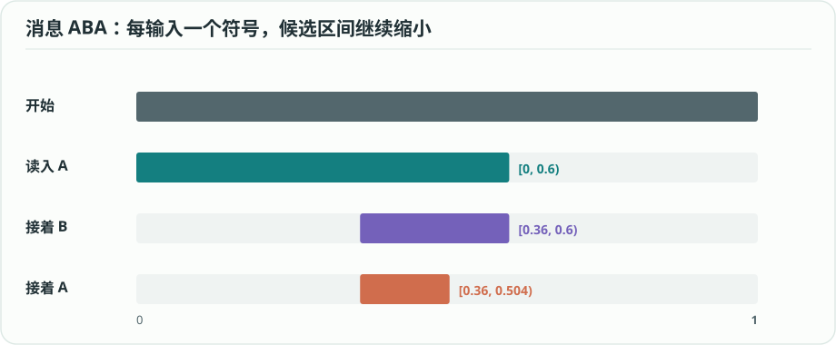
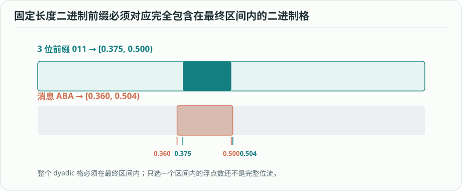
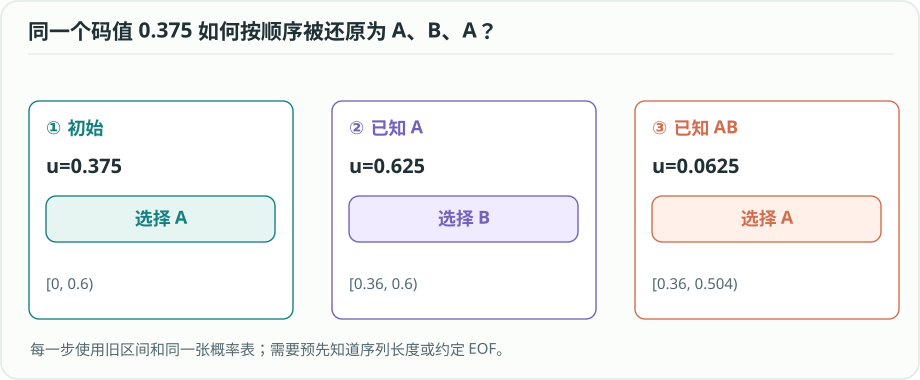

“每个符号必须占整数位”的限制能绕开吗？
逐符号 Huffman 编码必须给每个符号分配长度为整数的码字。如果信源只有 A、B 两种符号，概率分别 0.9 和 0.1，那么每个符号都至少占 1 bit，平均仍需 1 bit/符号；但信源熵 h₂(0.1)≈0.469 bit/符号。
算术编码不尝试给单个符号直接分配独立整数码字，而是将完整消息序列映射到 [0,1) 中一个逐步缩小的区间。最终只需要发一段足以唯一指向该区间的二进制前缀，整个序列就能被恢复。
每一步都是在当前区间里复制概率比例
假设当前区间为 [L,U)，宽度 W=U−L。按事先约定的字母表顺序 A、B，为 A 分配前 60% 的区间，为 B 分配后 40%。如果选中符号 s，令 C(s) 表示排在 s 之前的累计概率，p(s) 为自身概率，则新端点必须由同一份旧的 L、U计算：
不能把 low 提前改写后再用新 low 去计算 high；否则第二个端点会错误地包含旧区间的一部分，算法不可逆。图中的每段长度严格等于之前宽度乘当前符号概率。
完整编码示例：消息 ABA
初始区间 [0,1)。读到 A，取其前 0.6：区间变为 [0,0.6)。读到 B，取该区间后 40%：下界 0+0.6×0.6=0.36，上界 0+0.6×1=0.60。再读 A，取区间前 60%：新区间 [0.36,0.504)，宽度 0.144。

| 步骤 | 读入符号 | 区间 [L,U) | 宽度 |
|---|---|---|---|
| 0 | — | [0,1) | 1 |
| 1 | A | [0,0.6) | 0.6 |
| 2 | B | [0.36,0.6) | 0.24 |
| 3 | A | [0.36,0.504) | 0.144 |
选择 0、1、2、3 四个阶段，分别观察初始、A、AB 和 ABA。完整解码需约定三字符消息长度。
为什么选区间内一个数还不算完整编码？
最终的消息区间包含无限多个实数，但传输只能用有限 bit。我们需要选择一个二进制圆柱区间：长度为 m 的二进制前缀代表一个 dyadic 子区间 [k/2ᵐ,(k+1)/2ᵐ)。只有当这个子区间整体位于最终消息区间内，才可以不依赖额外后缀任意选择码值。
本例的三位前缀 011 对应 [3/8,4/8)=[0.375,0.5)，完全包含于 [0.36,0.504)。因此，当双方预先知道序列长度 n=3 和同一概率模型时，前三位 011 足以确定消息 ABA。

固定独立模型时乘积就是 ∏p(xᵢ)。因此区间宽度的负对数约为消息的理想编码成本；实际选择 dyadic 子区间、终止标记、对齐与模型开销会产生额外位数。
解码并不需要重建所有可能消息
解码器从码值 v 开始，在当前区间 [L,U) 计算归一化位置 u=(v−L)/(U−L)。根据 u 落在累计概率的哪段来确定下一个符号，再用同一份模型更新区间；重复 n 次，或在编码了 EOF 符号时持续到 EOF。

例如起初 u=0.375 属于 A 的 [0,0.6)；更新 [0,0.6) 后 u=0.625 属于 B 的 [0.6,1)；更新 [0.36,0.6) 后 u=0.0625 属于 A，正好恢复 ABA。
为什么现实系统要用整数算术和重归一化？
连续乘以概率使区间宽度指数级变小。用固定精度浮点数直接保存 L、U，长消息会在某一步让 L 与 U 被舍入成同一个数，导致无法继续细分。工程实现使用固定宽度整数区间、频率计数、逐步输出已确定的高位，并通过重归一化保持有效精度。
常见重归一化分支包括区间完全位于下半段时输出 0、完全位于上半段时输出 1，以及跨越中间二分界的 underflow/延迟位处理。编码器和解码器的参数、累计频率、状态更新和终止规则必须逐位匹配。
运行可逆的精确分数演示
仓库中的 examples/coding.py 使用标准库 fractions.Fraction，完全避开浮点舍入，以确保示例中的上下界与解码结果可以精确复查。
from fractions import Fraction as F
from examples.coding import arithmetic_interval, arithmetic_decode
p = {"A": F(3,5), "B": F(2,5)}
lo,hi = arithmetic_interval("ABA",p)
assert (lo,hi) == (F(9,25),F(63,125))
assert lo <= F(3,8) < hi
assert arithmetic_decode(F(3,8),3,p) == "ABA"
print(lo,hi,"bits=011") # 9/25 63/125相较于逐符号 Huffman 码，算术编码允许把许多符号的概率模型一起转换为流的长度，长期平均可以更接近序列熵；但真实压缩表现还受概率模型准确性、文件长度、头部和结束规则制约。
来源与延伸阅读
- Witten, Neal & Cleary (1987), Arithmetic Coding for Data Compression：可实践的有限精度算术编码与解码。
- MIT 6.441 (2016)，Chapter 9，Arithmetic coding：源序列区间编码与通用压缩。
- Cover & Thomas，§13.3：算术编码的理论与可变码长。